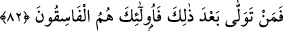
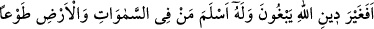
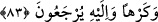

mı?” “el-ısr” kelimesi, insanın yapmayı üstlendiği bir iş sebebiyle kendisine gelen ağır
yüktür. Buradaki “ısr” ise, ağır söz (ahd) demektir. Çünkü bu söz, insanı, kendisine
muhâlefet etmekten meneden özelliği ile insana ağır gelmektedir.
Peygamberler, bunu kabul ettik, dediler. Bu ifade ile iktifa edilerek, ağır yükü
almalarından açıkça bahsedilmemiştir. Allah Teâlâ: “O halde ey peygamberler ve ey
ümmetler birbirinize şâhid olun, ben de sizinle beraber şâhid olanlardanım.” dedi. Yani
ben sizin bu kabul edişinize şâhidim; sizinle beraberim. Allah’ın beraberliğinden
maksat, Allah’ın ve kendilerinin birbirlerine şâhid olduklarını bildikleri için
sözlerinden dönmekten şiddetle sakınmalarını sağlamaktır.
82. Artık bundan sonra her kim dönerse işte onlar yoldan çıkmışların ta
kendileridir.
Artık kim bu kuvvetli ikrâr ve şehâdetten sonra bu sözden döner; yüz çevirir ise, işte
onlar fâsıkların ta kendileridir. Tâat çerçevesinden çıkan isyankâr kâfirlerdir. Çünkü her
grubun fâsıkı; haddi aşanlardır.
et-Teysîr adlı eserin müellifi şöyle diyor: “Peygamberleri ne sözünden dönmek, ne de
fısk ile vasıflamak mevzû bahistir. O zaman âyetin mânası iki şekilde yorumlanabilir:
Birincisi bu misâkın peygamberlerden ve onlara tâbi olarak ümmetlerinden alınması,
sözden dönmenin ise, sadece ümmetler için sözkonusu olmasıdır. İkincisi;
peygamberlerin mâsum oluşunun onları imtihan etme özelliğini izâle etmemesidir.”
Bu mîsâk, kendi kitaplarında zikredildiğine göre bunu biliyorladı. Bunu bildikleri için
de, Hz. Muhammed (s.a.)’in peygamberliğinin doğru olduğunu biliyorlardı. Bu durumda
kâfir olmaları için sadece düşmanlık ve hasedden (kıskançlıktan) başka bir sebep
kalmadı. Kitap ehli böylece, hasedi yüzünden kâfir olan İblis’e benzemiş oluyordu. İşte
Allah Teâlâ, kitap ehlinin böyle bir durumda kalmalarının Allah’dan başka bir ilah;
Allah’ın dîninden başka bir din istemeleri mânasına geldiğini şu âyet-i kerîmeyle onlara
bildiriyor:
83. Göklerde ve yerdekiler ister istemez O’na teslim olduğu halde onlar (ehl-i
kitap), Allah’ın dîninden başkasını mı arıyorlar? Halbuki O’na döndürüleceklerdir.
Yani verdikleri sözden dönüp de “Allah’ın dîninden başka bir din mi arıyorlar?
Oysa göklerde ve yerde olanların hepsi ister istemez” yani gök ve yer sâkinleri